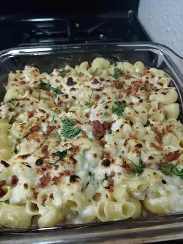

Chicken Enchilda Recipe Guide

Description:
This Mac and Cheese recipe is to die for! If you have some
leftover chicken, you can turn it into a cheesy dinner! Add your
favorite enchilada toppings and youll have the perfect dinner!
Ingredients
- 16 ounces elbow macaroni
- 1(10 ounce) can red enchilada sauce
- 1 cup half and half
- 1(4 ounce) can chopped green chilies
- 2 cups shredded sharp cheddar cheese
- 2 cups shredded pepperjack cheese
- 2 cups cubed cooked chicken
- ¼ cup chopped cilantro
Directions
- Bring a large pot of lightly salted water to a boil.
Cook elbow macaroni in the boiling water, stirring
occasionally, until tender yet firm to the bite, about
8 minutes. Drain and set aside.
-
Combine enchilada sauce, half-and-half, and green chiles in the same pot over medium heat and cook until warm, 5 to 10 minutes.
Slowly add Cheddar cheese and pepperjack cheese and whisk continuously until melted, about 5 minutes. Return cooked macaroni to the pot.
Add chicken and cilantro and stir until combined and heated through, about 5 minutes more.